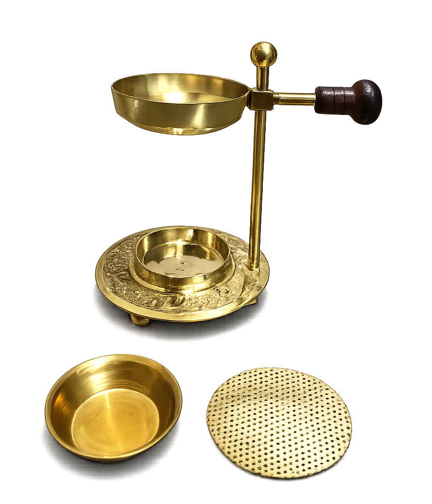
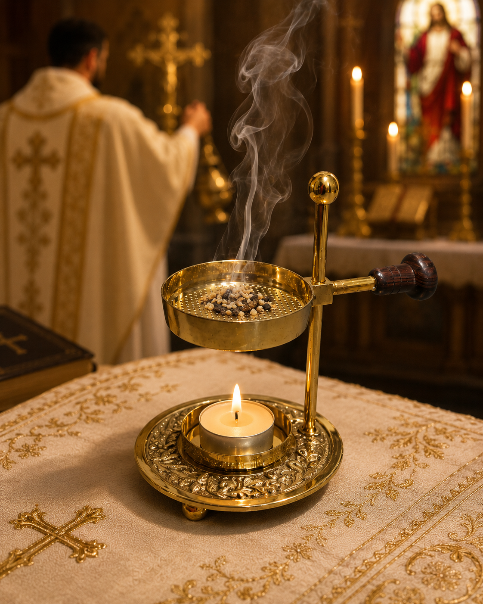

02 · Products from India
Decorative Incense Burner
An ornate gold-toned tabletop incense burner with a perforated upper tray, lower candle holder and wooden side handle.
Approx. width3 inches
Approx. height4 inches
Upper trayPerforated
HandleWooden
How to use
Create a calm ritual space.
The burner is designed for tabletop use. Always handle heated metal and burning incense carefully.
Using the incense tray
- Place the burner on a stable, heat-resistant, non-flammable surface away from curtains and other combustible materials.
- Place suitable incense material on the perforated upper tray. Do not overload the tray.
- Light the incense according to the incense manufacturer's instructions, then extinguish the flame if the incense requires it to smoulder.
- Allow smoke to rise through the perforations and enjoy your ritual, meditation, prayer or home fragrance routine.
- Let all ash and metal cool completely before touching, emptying or cleaning the burner.
The supplied photos show incense material burning on the perforated tray. Use only incense that is appropriate for this type of burner and follow the incense manufacturer's directions.
Using the candle holder
- Use a small candle that fits securely inside the lower holder.
- Keep the candle centred and stable before lighting.
- Never leave a burning candle or incense unattended.
- Keep children, pets and flammable objects away from the flame and hot metal.
- Extinguish the candle before moving the burner. Allow it to cool fully.
The metal can become very hot during use. Do not touch or move the burner while the candle or incense is burning or while the metal is hot.
Care & maintenance
Keep the finish looking beautiful.
After each use
- Wait until the burner and all ash are completely cool.
- Empty ash and residue gently.
- Wipe with a soft, dry cloth.
- If needed, use a slightly damp soft cloth and then dry thoroughly.
- Do not immerse the wooden handle in water.
Protect the surface
- Avoid abrasive powders, steel wool and aggressive scouring pads.
- Do not use bleach or harsh chemical cleaners.
- Keep the burner dry when stored.
- Over time, the metal may naturally change in tone; gentle cleaning helps preserve its appearance.
Product details
Designed for ritual and display.



SpiritualPetal
Turn a small corner of your home into a ritual space.
Check the current eBay listing for availability, price and shipping.
Shop the burner on eBay →